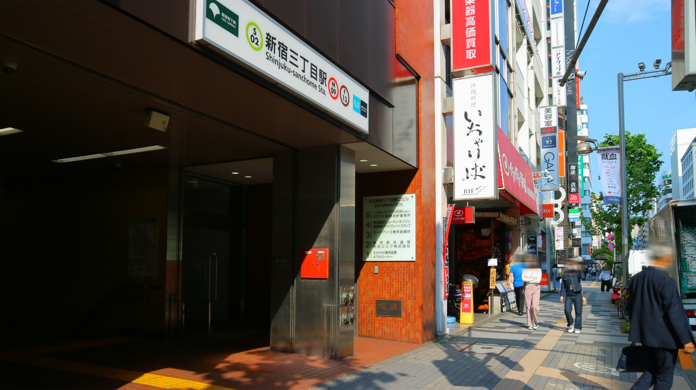

LOCATION
周辺環境

新宿三丁目駅（徒歩7分）
都会の刺激×自然の癒し、二つの贅沢が叶う街。
現地周辺には、日々の暮らしを快適に支えるスーパーやコンビニ、ドラッグストアなどの生活利便施設が充実し、日常的な買い物もストレスフリー。すべてが手の届く距離に揃っています。
さらに、華やかな新宿駅が日常使いできる便利なポジション。大型商業施設やエンターテインメントがすぐそばにあり、都市ならではの充実感や贅沢を日常の一部として満喫できます。休日には最新のショッピングや映画を楽しんだり、活気ある街を散策したりと、心躍る時間が広がります。
そして、都会の喧騒を離れて一息つきたいときには、「新宿御苑」が徒歩圏内に。四季折々の美しい自然に囲まれ、緑の潤いに癒される贅沢なひとときをお過ごしいただけます。
便利さと自然の安らぎが織りなす、まさに上質な暮らしがここにあります。
-

伊勢丹新宿店（徒歩9分）
-

新宿高島屋（徒歩17分）
-
新宿マルイ 本館（徒歩11分）
-

ルミネ新宿 ルミネ1（徒歩20分）
-

新宿イーストサイドスクエア（徒歩7分）
-

ローソンストア100 新宿五丁目店（徒歩2分）
※写真はイメージです。 -

新宿御苑（徒歩10分）
-

新宿区立富久さくら公園（徒歩7分）
LIFE INFORMATION
-
-
ショッピング施設
- まいばすけっと 新宿５丁目
- 3分
- まいばすけっと 新宿1丁目店
- 5分
- ヨークフーズ with ザ·ガーデン自由が丘 新宿富久店
- 6分
- マルエツ 新宿六丁目店
- 8分
- 業務スーパー 東新宿店
- 11分
- ジュピター 新宿サブナード店
- 13分
- 三平ストア新宿店
- 13分
- ローソンストア100 新宿五丁目店
- 2分
- ファミリーマート 東京医科大学前店
- 3分
- 龍生堂薬局 東新宿店
- 4分
-
教育施設
- 富久こども園ちいさなうちゅう分園
- 4分
- キッズパラダイス新宿
- 7分
- 富久ソラのこども園ちいさなうちゅう本園
- 8分
- ワンダーガーデン保育園 新宿御苑前
- 9分
- 富久町保育園
- 11分
- 新宿区立花園幼稚園
- 10分
- 大久保 わかくさ子ども園
- 15分
- 新宿区立花園小学校
- 10分
- 新宿区立四谷中学校
- 34分
-
-
-
医療機関
- 藤村内科外科クリニック
- 3分
- 新宿御苑しょうクリニック
- 4分
- 新宿トミヒサクロス クリニック
- 6分
- イーヘルスクリニック新宿院
- 8分
- 新宿三丁目メディカルクリニック
- 9分
- 新宿追分クリニック
- 11分
- 新宿駅三丁目クリニック
- 12分
- 医療法人社団敬昭会芙蓉診療所成人病医学センター
- 6分
- 東京都立大久保病院
- 15分
- 東京女子医科大学病院
- 21分
- 国立国際医療研究センター病院
- 22分
-
その他
- 四谷警察署 御苑大通交番
- 5分
- 新宿区立四谷図書館
- 14分
- 新宿区役所
- 11分
-